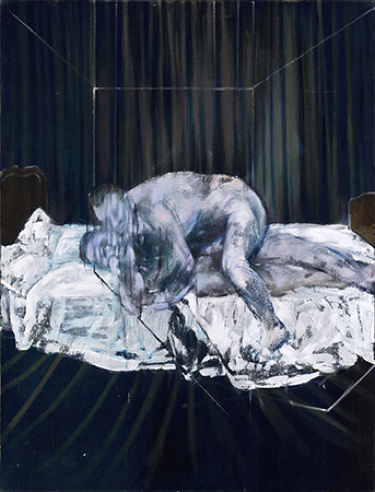

Lágrimas de Eros · Obra 109 de 124
Dos figuras (Two Figures)
Francis Bacon (1953)

Dos figuras desnudas enlazadas sobre sábanas blancas, delante de un fondo de cortinas con estrías verticales. Bataille lo titula «La habitación» y lo sitúa en la Hanover Gallery de Londres. Estuvo depositado en la Tate de 1957 a 1959. Después de la exposición del Grand Palais de 1971 no se volvió a ver en público hasta 2017, en el Fitzwilliam Museum de Cambridge.
Lo que hace que destaque
Dos figuras desnudas enlazadas sobre sábanas blancas, delante de un fondo de cortinas con estrías verticales. Bataille lo titula «La habitación» y lo sitúa en la Hanover Gallery de Londres. Estuvo depositado en la Tate de 1957 a 1959. Después de la exposición del Grand Palais de 1971 no se volvió a ver en público hasta 2017, en el Fitzwilliam Museum de Cambridge.
Contexto histórico
Identificada por la composición: Bataille le da otro título. Se dice que la Hanover Gallery lo expuso en 1953 y que después fue de Lucian Freud, pero las fuentes leídas no lo recogen.
Autoría y procedencia
Francis Bacon (1909-1992), pintor británico de origen irlandés, uno de los creadores figurativos más desgarradores y singulares de la posguerra europea.
En los libros
Las lágrimas de Eros, de Georges Bataille · Lámina de la p. 187
«Francis Bacon, joven pintor inglés y uno de los más importantes de su generación, empieza a darse a conocer por sus cuadros insólitos, marcados por su carácter brusco.»Francis Bacon, a young English painter and among the most important of his generation, is becoming known through his unusual paintings marked by their brusque character.Georges Bataille, «Las lágrimas de Eros» (1961), traducido al español de la ed. inglesa de City Lights (1989), p. 187
Ficha pendiente de contrastar con fuentes académicas.